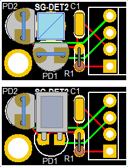
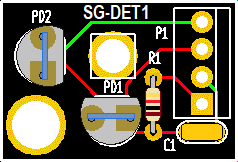
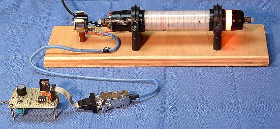

Combining the Arduino and Non-Arduino versions makes sense since the bulk of the Arduino description is just a link to the µSLC1 manual. ;-)
The following components are included:
CAUTION: Do not touch anode-end when powered or shortly after powering down to avoid a shocking experience! It probably won't be lethal, but tossing the entire rig across the room due to a reflect reaction is bad form and may impact your grade. ;-) A clip lead can be used to short the two ends of the tube AFTER shutting off power. Touch it to the cathode-end FIRST!
Note: where both the HeNe laser power supply and heater run on 12 VDC, a single higher current 12 VDC adapter may be provided.
What you will need to provide:
Plenty of other possibilities can be found in Sam's Laser FAQ, chapter: Home-Built HeNe Laser, and the schematics in the chapter: Commercial Stabilized HeNe Lasers.
Power and wiring:
Follow the link to the type of power supply and adapter that was included in the kit:
None of the kits shipped after mid-January 2020 have copper bricks.
Pay particular attention to the tube to determine the anode and cathode ends, and where the output beam comes from. The high voltage output of the power supply - the fat red wire with ballast resistor(s) - MUST go to the anode-end. The anode is the glass-end of the tube; the cathode is the aluminum can-end. The tube may start and appear to run normally with reverse polarity but will likely be damaged quickly.
The output (main) beam exits the anode-end of the tube for most of the 6 inch tubes, but the cathode-end for the 4-3/4 inch tubes. So to make these fit the tube mounts, a hole may need to be drilled in the cathode-end mount so the beam can exit. I may have been nice and already drilled the required hole. ;-) If not, it may also be possible to install the tube with its ends AND the wires swapped. But confirm it will fit this way first - not all will fit due to the tip-off (the small metal tube where the air was removed and the gas was inserted) getting in the way unless the plastic mount is trimmed.
Install the heater:
For the 7/8 to 1 inch diameter tubes, the 2x3" heater should be wrapped around so it covers nearly the entire circumference. (3 inch dimension goes around it.) The Kapton heater has an adhesive backing. Peel off the backing paper and stick it on centered between the two end-caps. For convenience (this is sort of arbitrary) orient it with the wire connection point lined up with the the tip-off (metal tube sticking out of the end-bell at cathode-end of tube where the air was removed and the HeNe gas was added). Press it firmly in place over its entire surface but avoid stressing the leads where they are glued to the heater. A couple strips of Kapton tape may be useful to make sure it doesn't come loose.
Determining the polarization axes of the tube:
Note that the laser tube actually produces 2 beams: A strong one out the front and a much weaker one out the rear. For the stabilized laser, the detector can be constructed behind the rear of the tube and use the weak beam as it usually (but not always) has enough power for this purpose. But if desired or if the waste beam power is too low, a portion of the main beam can be split off using a glass plate like a microscope slide, and that can be used instead. A variable attenuator plate is included for this purpose. In principle, using the main beam will have slightly better stability, especially for some tubes when using intensity (single mode feedback) stabilization. However, the sampler must be mostly polarization independent (though none are perfect). Otherwise, one of the modes will be much stronger than the other. More below.
With the tube powered, place a continuous reading laser power meter in the output beam. (One of the photodiodes connected to a VOM or DMM set to its µA range will suffice.) Use a polarizer to identify the orientations of the polarized modes of the tube. These will be the angles of the polarizer where the variation in power due to mode sweep is maximized. There will be two such angles orthogonal to each-other. For reasons not fully understood, one of these often more or less lines up with the exhaust tip-off (metal tube with red cover at cathode end of tube). Label the axes and adjust the orientation of the tube so one is either vertical or horizontal, whichever causes the tip-off to be closest to the bottom (for convenience, the photons really don't care).
The power varies because the longitudinal modes of the laser cavity are moving through the neon gain curve as the tube expands due to heating. The roughly bell-shaped gain curve results in gain variation depending on its height. If 5-10 VDC is applied to the heater (between the two red wires), the rate of the mode sweep will greatly increase since the tube is expanding faster.
As the tube/heater combination approaches thermal equilibrium where the power input from the electrical discharge in the bore of the laser tube and heater power are balanced by heat loss to the environment, the mode sweep will slow down and eventually stop. If power is removed from the heater at that time, the discharge heat alone will no longer be able to sustain the same temperature, the tube will start to cool, and the mode sweep will reverse.
This shows the mode sweep from a cold start of a tube similar to the type included in the kit.
For thermal stabilization to be effective, what is desired is where a modest amount of heater power is needed to be at thermal equilibrium. Perhaps 20-30 percent of the power in the bore discharge. For the 6 inch tube running at at 3.5 mA, 900 V, the bore discharge power is just over 3 W. So, 1 W of heater power should be sufficient to allow the laser to stabilize with reasonable immunity to ambient temperature changes. Using a 3 or 4 VDC power supply, it should be possible to simulate the action of an electronic feedback circuit to confirm that stabilization is possible. However, for the actual stabilized, 12 VDC is recommended to provide more headroom and flexibility.
A purist might object (due to electrical noise considerations), but this means that a single power supply could be used for both the HeNe laser power and the stabilizer. For these kits, a 12 VDC power pack will be used for both.
Beam sampler (if NOT using the waste beam for feedback):
A variable attenuator plate is included in the kits to be used as a beam sampler if the waste beam is too weak for that purpose or if it cannot be used for some other reason. It should be oriented at an acute angle to miminize it's effect on polarization. 20 to 30 degrees is recommended. It should be positioned so that the reflected beam is lowest power (since even that should be plenty strong) and the transmitted (presumably the useful beam) is highest power.
Detector assembly:
The main parts in this comprise a Polarizing Beam Splitter (PBS) cube and a pair of PhotoDiodes (PDs). A small PCB is included to mount the PBS cube, PDs, and ancillary parts.
The diagrams below shows the PCB layout of the detector PCBs:


The left-hand pair of diagrams show two possible orientations for the PBS with the beam entering from the side or top, your choice.
It is recommended that the 2 pin sockets included in the detector baggy be used for the photodiodes. This eliminates issues of damage from soldering. Trim the PD's legs to around 1/8 inch. They may also need to be shaved down slightly to fit the holes in the sockets. A spacer will be required to raise the PBSC to be level with the PD(s).
The locations of all the components should be self evident.
If not desired or convenient to use the PCB, the PBSC can be glued to a post with the PDs glued to its back and side, or to some simple plastic or metal enclosure of your choice. Take care with the PD lead wires as they are easily broken. Very thin wire (e.g., AWG #30) is recommended. Do NOT apply any stress while soldering as the heat can melt the plastic causing them to shift and break internally. After soldering, confirm that the PDs still behave like diodes with a DMM. Using the PCB is less stressful all around. ;-)
Checking the beam sampler before final assembly:
Cut a piece of a sticky black label or other similar opaque material to be about the same size as the mirror glass at the rear of the tube (order of 6-8 mm or 1/4 inch). (Use a Magic Marker to turn a white label black if needed so it's more or less opaque.) Use a tiny drill bit or similar tool to make a clean 0.7 to 1 mm hole in it. With the laser powered, stick this aperture over the rear-end mirror so the weak waste beam passes through it. The purpose of the aperture is to block "bore light" from affecting the photodiodes in the beam sampler. (The tube provided may already have something like this in place but you might want to improve upon it.)
Place the PBS on a support so the waste beam passes through its center and a deflected beam shoots off to one side. Eventually it will need to be mounted securely, but for now, a block of wood or stack of CDs and CD boxes will suffice.
Now use a white card as a screen to observe the weak beam coming straight back out of the PBS and the beam being reflected to the side. They will vary in intensity along with the polarized modes coming out the front. One of the photodiodes will be placed behind the PBS cube and the other on the side. If necessary, fine tune the tube orientation so each of the beams goes completely dark periodically during mode sweep. Devise mounts for the PDs so each of the beams strikes its respective PD and any reflections do not go back into the tube.
Testing the photodiodes response to laser light:
To test the response of the silicon PhotoDiodes (PDs) included in these kits, a simple test circuit using a few resistors, a 5 VDC power supply (or USB charger cube), and DMM can be constructed before connecting the stabilization controller. To determine the polarity of the PDs, use the DMM on the "Diode Test" range across the pins: The voltage drop will be between 0.5 and 0.6 V if the red probe is connected to the anode. The polarity is usually opposite for a VOM but they are only found in museums these days. ;-)
Wire up a test circuit as follows:
V1
o
R Protect PD1 | R Load 1
+5 VDC o----/\/\----+-----|<|---+---/\/\-----+
| |
| V2 |
| o |
| PD2 | R Load 2 |
+-----|<|---o---/\/\-----+
|
|
GND/RET o-------------------------------------+
CAUTION: If the PDs are at the anode-end of the tube, take care to keep the setup at a safe distance as they won't like being zapped by the high voltage. Nor will you. :( :) A piece of clear plastic can also be added between the tube and detector to provide HV insulation.
Closing the loop:
To stabilize the laser so that the position of the modes is under automatic control requires some electronics to first run the tube in "Preheat Mode" so that the temperature of the tube/heater combination levels off somewhat above ambient, and then to "Lock Mode" to allow the output of one or both photodiodes to take control.
If you're willing to switch from Preheat to Lock mode manually, the required circuit can be as simple as 2 basic electronic components - a resistor and a power MOSFET. This won't have superior performance but is quick and easy to get working and therefore will provide nearly immediate gratification. :)
Much more sophisticated approahes are possible including a fully digital control system with wireless Internet access and data logging. :) But an intermediate level of complexity similar to that used in most commercial stabilized HeNe lasers is certainly well within the reach of someone with a moderate knowledge of electronics. This would use a couple op-amps to to act as a transimpedance amplifier for the photodiodes and implement Proportional Integral (PI) control loop.
Non-Arduiono implementations:
(For the Arduino version of the kit, skip down to "Arduino implementation".)
Assuming a basic but not totally minimal approach, one of the following circuits should be suitable as a introductory exercise in laser stabilization:
Note that both these circuits have the photodiodes paralleled with opposing polarity with a single op-amp rather than separate preamps and a difference amp. To do it this way will require modifying the detector PCB.

This laser uses a hand-wound heater but is otherwise similar to the kit.
To make everything fully automatic, either a simple timer as a delay from power-on, or a monostable circuit that detects when the mode sweep cycle exceeds a preset time can be used to do the switchoever at the once the tube has reached operating temperature.
For more detailed descriptions and other options, see the sections of the Laser FAQ starting with: Inexpensive Home-Built Frequency or Intensity Stabilized HeNe Laser.
Or, use parts of the circuitry of a commercial stabilized HeNe laser like the Spectra-Physics 117 or Coherent 200. There are complete schematics of these in the chapter: Commercial HeNe Lasers.
Using the most basic setup with the photodiodes paralleled with opposite polarity, the output of the laser when locked will be the two orthogonal linearly polarized modes with approximately equal amplitude. With a slightly more complex preamp circuit, the amplitudes could be adjusted over a fairly wide range while retaining mode purity. To use this rig as a single frequency laser for something like holography or homodyne interferometry, one of the modes should be blocked with a Linear Polarizer (LP) such as another PBS cube (for best efficiency) or a sheet polarizer.
Arduino implementation:
The only thing that changes using the Arduino is how the heater is controlled. Rather than an analog control loop with op-amps and the like, a digital control algorithm is implemented in microcomputer firmware using inputs from the photodiodes and driving the heater with a pulse width modulated signal as the output. An Atmega 328 Nano 3.0 is the brains, a popular microcomputer used for numerous applications. An optional PC running Windows (not included!) provides a way to monitor operation and change various parameters, but this is not essential. The Nano firmware is programmed in C and the source code is provided should one desire to hack it. ;-) Complete installation and assembly instructions may be found at Micro Stabilized Laser Controller 1 (µSLC1) Installation and Operation Manual.
Enhancements/experiments:
A simple fix is to add a glass plate at a small angle (a few degrees) using clear 5 minute Epoxy or UV cure optical adhesive. Index matching adhesive is best but almost any type will be close enough to greatly reduce the retroreflections. DON'T use Crazy glue (cyanacrylic) or hard Epoxy!!! as these may damage the optics and/or are more difficult to remove if desired.
An alternative that may be good enough is to coat the mirror glass with a thin layer of clear Silicone or 5 minute Epoxy. If done carefully, this will not distort the waste beam very much but will provie a non-uniform reflective surface that will greatly reduce the etalon effects and may help some with back-reflections into the bore.